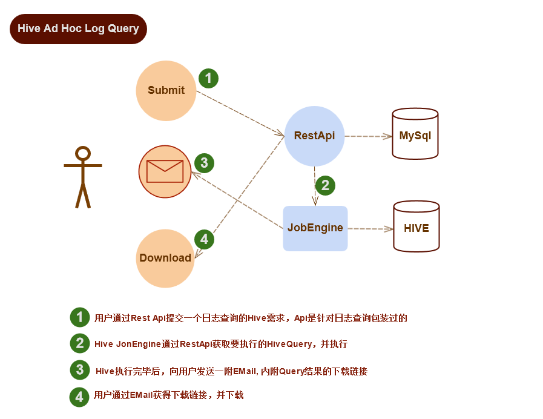

Hive Ad Hoc Log Query
1 概述
目前用户除了通过LogBrowser查询最近7天的日志数据外，没有一种好的方式查询7天以前的数据。
现在是用户提出需求，我们手动执行查询，然后告诉用户下载链接。这种方式不通用，而且双方都不方便，占用大量人工成本，无法应付大量需求。
需要提供一种类似自动化流程，用户自己操作的方式提供支持复杂条件的日志导出。
2 设计目标
-
基于Hive提供支持复杂条件的日志查询服务
-
查询结果存储为CSV文件
-
用户自己操作
3 总体架构
下面是包含的组件与查询流程：

工作流程：
-
提交一个日志查询需求
-
可以通过RestApi直接提交
-
也可以通过LogBrowser中的一个页面，间接通过RestApi提交
-
需要根据要求填写查询条件
-
执行一个查询需求
-
从队列中取出下一个查询需求
-
根据需求组装成一个hive查询语句
-
执行这个查询语句(实际上是一个mapreduce job)
-
查询结果根据规约放到指定的地方
-
发送查询结果邮件
-
一个查询需求执行完毕后，给指定的用户发送查询结果邮件
-
邮件中内嵌查询结果的下载链接
-
下载查询结果
-
用户收到查询结果邮件后，通过邮件中的链接下载查询结果
4 组件组成
4.1 Domain对象
4.2 RestApi
4.3 执行Job